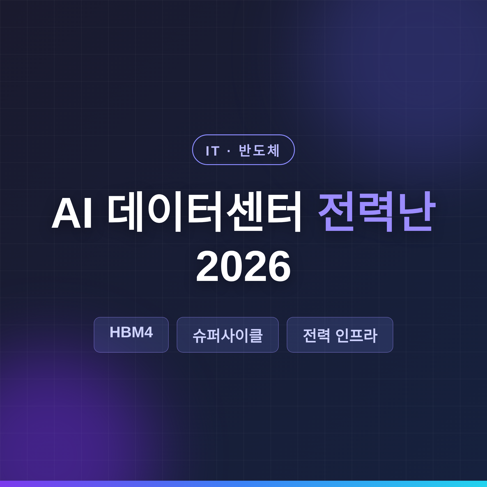
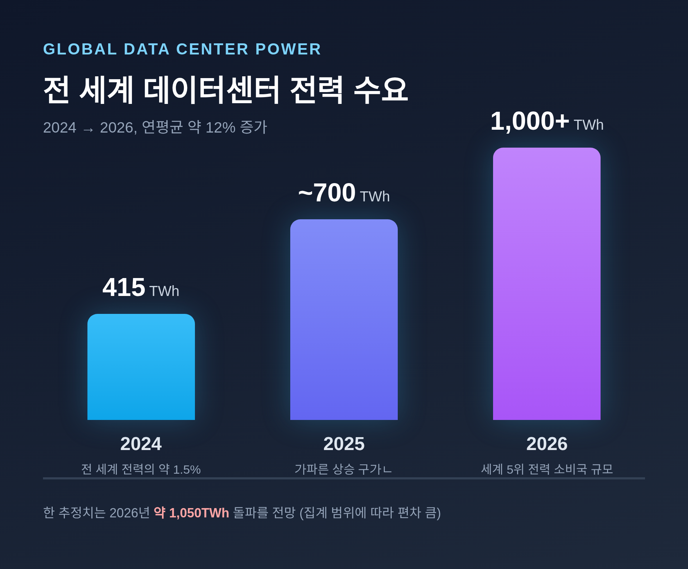
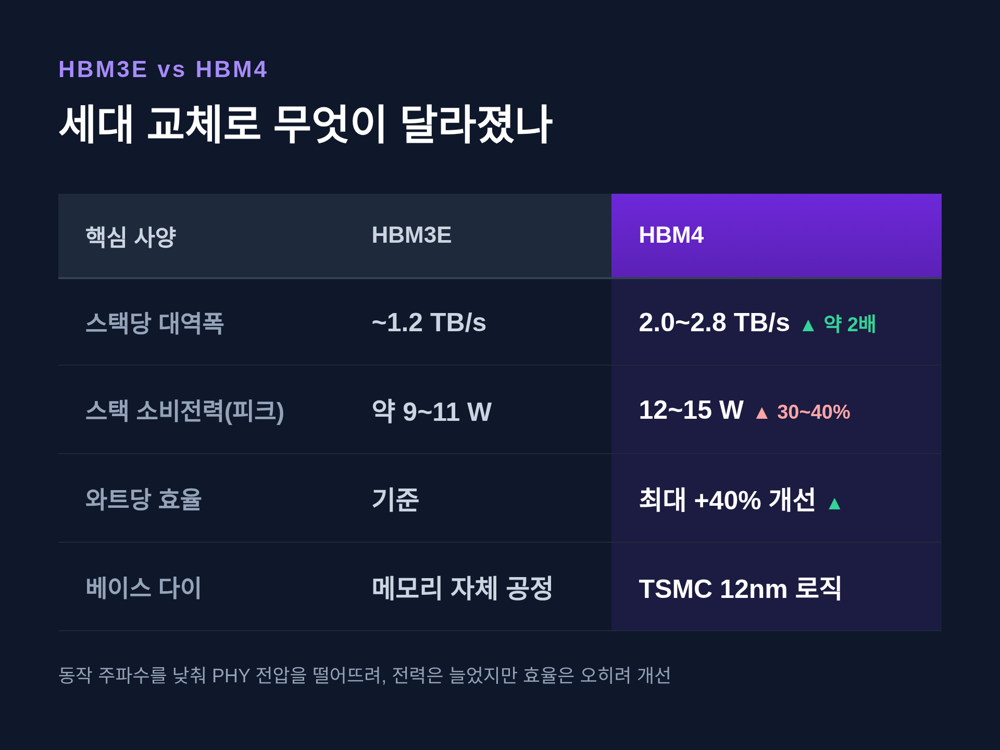
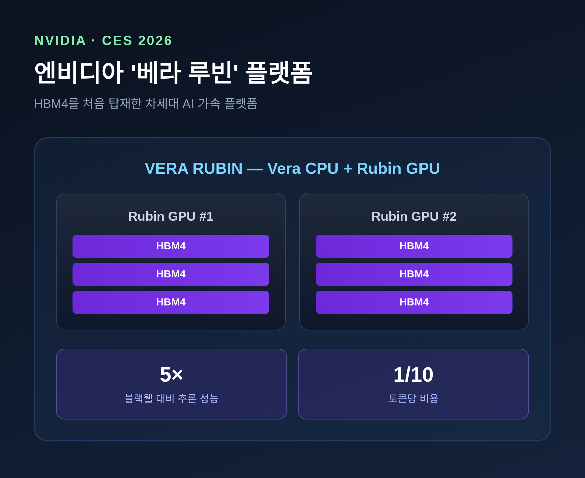
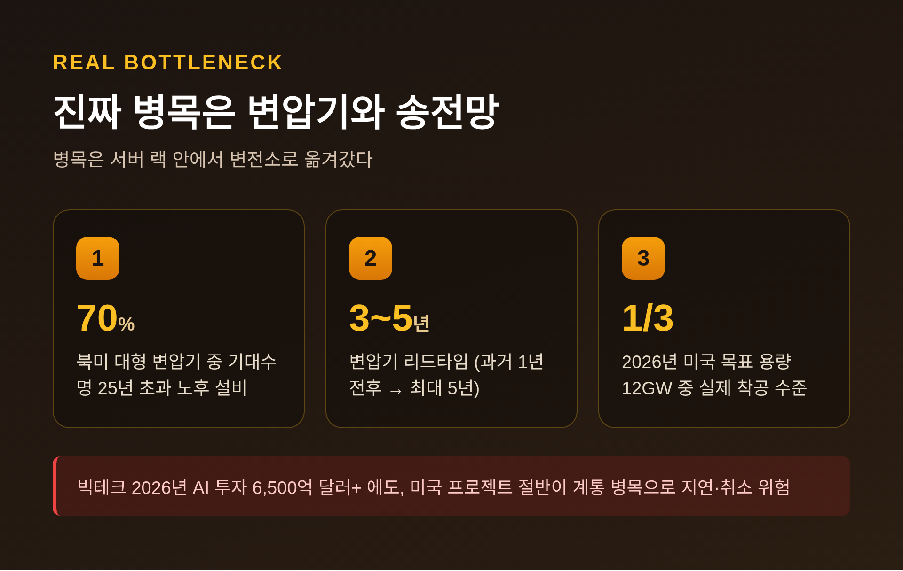

[IT] AI 데이터센터 전력난 2026 — HBM4와 전력이 가른 반도체 슈퍼사이클

2026년 반도체 슈퍼사이클의 두 축은 분명합니다.
하나는 HBM4라는 메모리 기술, 다른 하나는 그 칩을 돌릴 전력입니다.
이 글에서는 AI 데이터센터 전력난과 HBM4가 어떻게 맞물려 흘러가는지 정리해 보겠습니다.
먼저 핵심부터 세 줄로 요약합니다.
- 데이터센터 전력 소비가 급증해, 한 추정치는 2026년 1,000TWh 돌파를 전망합니다(집계 범위에 따라 편차가 큽니다).
- HBM4는 2026년 2월 삼성·SK하이닉스가 세계 최초 양산에 들어갔고, 엔비디아 '베라 루빈'에 처음 탑재됐습니다.
- 진짜 병목은 칩이 아니라 변압기·송전망 같은 전력 인프라로 옮겨갔습니다.
■ 데이터센터가 먹어 치우는 전력, 얼마나 늘었나
전 세계 데이터센터 전력 소비량은 2024년 약 415TWh였습니다.
전 세계 전력 소비의 약 1.5%에 해당하는 규모입니다.
이 수치는 2017년 이후 연평균 약 12%씩 늘었습니다.
전체 전력 수요 증가 속도의 네 배가 넘습니다.
증가 속도는 더 빨라지는 추세입니다.
IEA는 2026년 데이터센터 전력 소비가 1,000TWh를 넘어설 것으로 봤습니다.
한 추정치는 약 1,050TWh에 이를 것으로 전망합니다.
데이터센터를 하나의 국가로 친다면, 일본과 러시아 사이의 세계 5위 전력 소비국에 해당하는 양입니다.

다만 수치는 출처마다 차이가 납니다.
'2026년 1,000TWh 돌파'는 암호화폐 채굴을 포함한 단기 전망입니다.
반면 IEA의 다른 전망은 2030년 약 945TWh로 2024년 대비 두 배가 될 것으로 봅니다.
보고서 버전과 집계 범위가 달라 직접 비교가 어렵습니다.
어느 쪽이든 방향은 같습니다 — 데이터센터가 전력 수요 증가를 끌고 간다는 것입니다.
증가의 핵심 동인은 AI입니다.
AI 가속 서버의 전력 소비는 연 30% 성장이 예상됩니다.
데이터센터는 2030년까지 전 세계 전력 수요 증가분의 거의 절반을 차지할 전망입니다.
■ HBM4, 무엇이 달라졌나
HBM4는 2026년 AI 반도체 슈퍼사이클의 기술적 분수령입니다.
고대역폭메모리, 즉 칩과 칩 사이로 데이터를 빠르게 실어 나르는 메모리의 4세대입니다.
스택당 대역폭은 2.0~2.8TB/s에 이르고, 2026년 양산 기준으로 2.0TB/s 이상을 목표로 합니다.
전 세대인 HBM3E와 비교하면 큰 폭의 향상입니다.
흥미로운 점은 전력입니다.
HBM4 스택은 피크 동작 시 12~15W가량을 씁니다.
HBM3E 대비 30~40% 늘어난 수치입니다.
그런데 와트당 효율 지표는 오히려 최대 40% 개선됐습니다.
동작 주파수를 낮춰 PHY 전압을 떨어뜨린 덕분입니다.

효율 개선의 또 다른 비결은 베이스 다이입니다.
이전엔 메모리 업체가 직접 만들던 부분입니다.
지금은 TSMC의 12nm 로직 공정을 빌려 만듭니다.
이 변화로 대역폭을 두 배, 전력 효율을 40% 이상 끌어올렸습니다.
물론 한계도 있습니다.
가장 큰 과제는 발열입니다.
스택이 높고 조밀해질수록 중앙부의 열을 빼내기가 어려워집니다.
그래서 2026~2027년에는 칩에 직접 액체를 흘리는 액체냉각 도입이 급증할 것으로 전문가들은 봅니다.
실제로 중국 창신메모리(CXMT)는 발열 등 기술 난항으로 HBM4 일정이 밀렸습니다.
■ 양산 경쟁과 엔비디아 '루빈'
양산의 출발선은 2026년 2월이었습니다.
삼성전자와 SK하이닉스가 이 시점에 HBM4 양산을 확정했습니다.
세계 최초입니다.
미국 마이크론은 2026년 2분기 양산을 전망합니다.
시장 판도도 흔들리고 있습니다.
HBM3E까지는 SK하이닉스가 독보적이었습니다.
HBM4로 넘어오면 삼성과 마이크론의 추격이 거세질 전망입니다.
| 기업 | 2026년 HBM4 점유율 전망 | 양산 시점 |
|---|---|---|
| SK하이닉스 | 54~55% | 2026년 2월 |
| 삼성전자 | 28~29% | 2026년 2월 |
| 마이크론 | 17~18% | 2026년 2분기 |
점유율은 엔비디아·구글·AMD 합산 기준 전망치입니다.
이 HBM4를 처음 품은 칩이 엔비디아 '베라 루빈'입니다.
2026년 1월 CES에서 젠슨 황 CEO가 공개했습니다.
전 세대 블랙웰 대비 추론 성능 5배, 토큰당 비용은 10분의 1로 줄였다고 합니다.

다만 순항만 한 것은 아닙니다.
2026년 4월에는 엔비디아가 루빈 생산을 25% 줄였다는 보도가 나왔습니다.
HBM4 공급 병목이 원인으로 지목됐습니다.
이후 6월 컴퓨텍스에서는 젠슨 황이 "본격 양산에 들어갔다"고 밝혔습니다.
상반기 내내 상황이 유동적이었던 셈입니다.
■ 진짜 병목은 변압기와 송전망
이쯤에서 시선을 칩 바깥으로 돌릴 필요가 있습니다.
예전엔 병목이 서버 랙 안에 있었습니다.
지금은 변전소로 옮겨갔습니다.
전력을 끌어올 수 있느냐가 신규 데이터센터 건설의 최대 제약이 됐습니다.
특히 변압기 부족이 심각합니다.
북미 대형 변압기의 약 70%가 기대수명 25년을 넘긴 노후 설비입니다.
교체 수요는 쌓이는데 만들 곳이 부족합니다.
리드타임은 과거 1년 전후에서 한국 보도 기준 최대 3~4년으로 늘었습니다.
미국에서는 최대 5년까지 연장됐다는 보도도 있습니다.

결과는 차질입니다.
빅테크가 2026년 AI에 6,500억 달러 이상을 쓰겠다고 했습니다.
그럼에도 미국 데이터센터 프로젝트의 거의 절반이 계통·부품 병목으로 지연되거나 취소될 수 있다는 전망이 나옵니다.
2026년 목표 미국 용량 약 12GW 중 실제 착공 중인 것은 3분의 1 수준입니다.
한국도 예외가 아닙니다.
노후 전력망 교체 시기와 AI 데이터센터 수요가 겹치면서, 변압기·송전선로·배전반 관련주가 오르는 전력 인프라 슈퍼사이클이 진행 중입니다.
■ 슈퍼사이클의 빛, 그리고 해법
전력난의 이면에는 사상 최대 실적이 있습니다.
2026년 SK하이닉스와 삼성전자의 영업이익 합계가 200조 원을 넘어 최대 250조 원에 달할 것이라는 관측이 나옵니다.
KB증권은 삼성전자 145조 원, SK하이닉스 115조 원으로 양사 모두 '영업이익 100조 클럽' 진입을 전망했습니다.
보도에 따르면 SK하이닉스는 2026년 1분기에 창사 이래 최고 실적을 냈습니다.
이 호황의 엔진은 HBM입니다.
SK하이닉스 뉴스룸조차 2026년을 "HBM이 이끄는 메모리 슈퍼사이클"로 규정했습니다.
해법 쪽도 빠르게 움직입니다.
빅테크는 원전에 베팅하고 있습니다.
메타는 원전 기업 세 곳과 2035년까지 총 6.6GW 규모 전력 공급 계약을 맺었습니다.
마이크로소프트는 스리마일아일랜드 원전 재가동에 나섰습니다.
구글은 SMR 스타트업 카이로스파워와 총 500MW 전력 구매 계약을 체결했습니다.
한국 정부도 재생에너지만으로는 한계가 있다고 보고 원전 2기와 SMR 1기 신규 구축을 결정했습니다.
다만 근본 문제는 따로 있습니다.
데이터센터를 짓는 속도와, 발전·송전 설비가 돌아가는 시점 사이의 '시간 격차'입니다.
발전만 늘려선 풀리지 않습니다.
변압기와 송전망 병목을 함께 풀어야 합니다.
정리하면 이렇습니다.
2026년 반도체 슈퍼사이클은 HBM4라는 가속 페달과 전력난이라는 제동을 동시에 안고 달립니다.
빠른 칩은 이미 나왔습니다.
문제는 그 칩에 전기를 댈 인프라가 제때 따라붙느냐입니다.
가속과 제동 사이, 2026년의 균형점은 어디일지 함께 지켜보면 좋겠습니다.